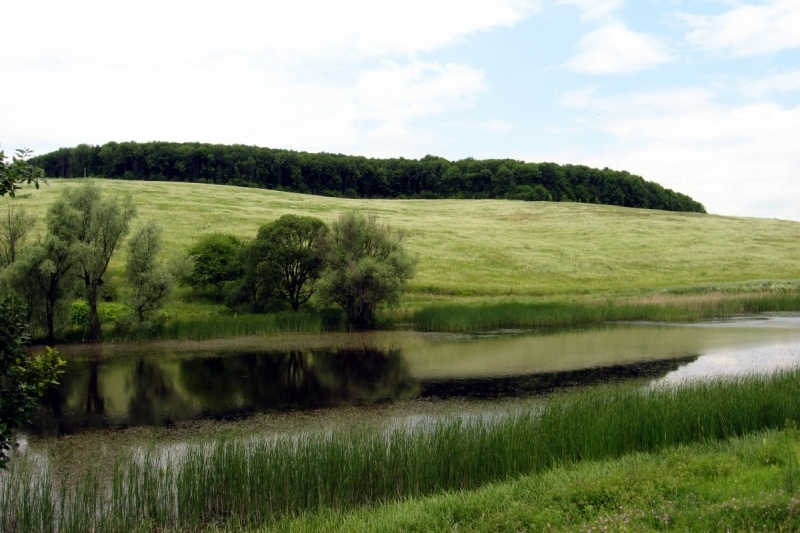
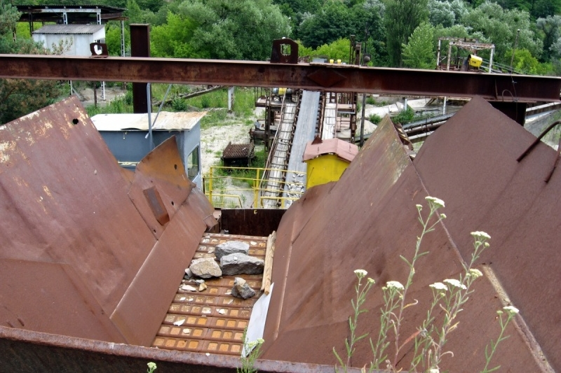
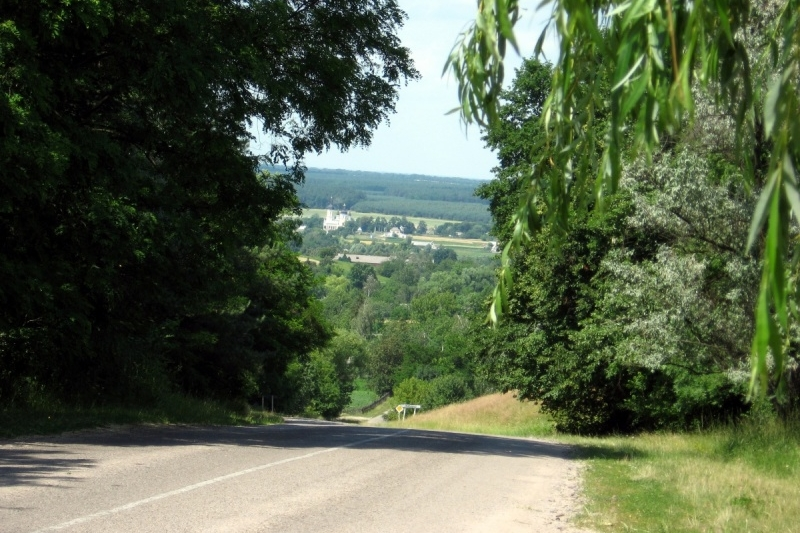
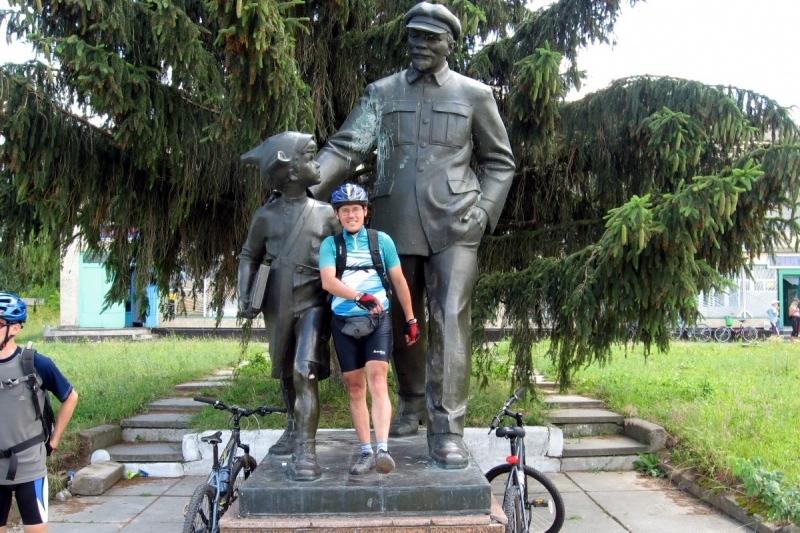

Навколо Богуслава
Перші покатеньки були у найбільш мальовничі місця - на південь правого берега Київської області. Кручі, яри, Дніпро... Перевага велосипеду, як транспортного засобу у тому, що на ньому можна дістатися до таких місць, куди автомобілем не проїдеш, а пішки йти далеко.

Ця покатенька - навколо Богуслава. Події "Кайдашевої сім'ї" Нечуя-Левицького саме у цих краях відбувалися. Села згадувані у повісті насправді існують - Семиогори, Бієвці, Чайки... Тут протікає річка Рось, на поверхню виходить граніт. Загальна відстань маршруту - 97 км.
Місток через Рось у Тептієвці

Дробильна машина у гранітному кар'єрі


Пам'ятник Леніну з хлопчиком у Дибинцях. Через дорогу від пам'ятника - місцеве кафе/магазин. Тому пам'ятник називається "Ленін веде хлопчика у ресторан".
Гарний ландшафт на под'їзді до Мар'їної кручі.
Вид на Рось з Мар'їної кручі.